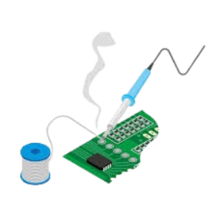

COMPONENTES
Placa Arduino UNO
Arduino es una plataforma de hardware y software libre utilizada para crear proyectos de electrónica y robótica. Se compone de una placa de circuito impreso con un microcontrolador, así como de un entorno de desarrollo integrado (IDE) que permite escribir, compilar y cargar código en la placa. La plataforma Arduino se ha vuelto muy popular debido a su facilidad de uso, bajo costo y gran cantidad de recursos en línea.
Arduino Uno es una de las placas más populares de la plataforma Arduino. Se basa en el microcontrolador ATmega328P de la empresa Microchip, que cuenta con 14 pines de entrada/salida digital y 6 pines de entrada analógica. La placa también incluye un cristal oscilador de 16 MHz, un puerto USB, un conector de alimentación y un botón de reset. Arduino Uno es una placa versátil y fácil de usar que ha sido utilizada en una amplia variedad de proyectos, desde sensores y dispositivos de control hasta robots y sistemas de automatización.
Cautín y estaño

Un cautín, soldador eléctrico o de estaño es una herramienta eléctrica que se utiliza para realizar soldadura blanda, es decir, con material que tiene una baja temperatura de fusión (entre 300º C y 450º C) como por ejemplo el estaño. Los cautines eléctricos generan calor debido al paso de una corriente a través de un elemento calefactor, generalmente un alambre de níquel-cromo de alta resistencia devanado en forma de bobina alrededor de un núcleo de cobre. El calor desarrollado en este último se trasmite por conducción a la punta de la herramienta, hecha de acero inoxidable, y de esta a los puntos de unión y a la soldadura. Los cautines eléctricos se fabrican en una gran variedad de marcas, modelos y estilos, diferenciados entre sí por la potencia de operación del elemento calefactor, la cual es proporcional a la cantidad de calor generado. De hecho, la potencia nominal es generalmente la consideración más importante que se debe tener en cuenta cuando se selecciona un cautín para una tarea específica. Normalmente, los cautines para uso electrónico se consiguen con potencias de 25, 40 o 60 vatios y se alimentan de la red pública de 110 voltios. Los cautines de punta fina se utilizan principalmente para pequeños trabajos de soldadura en electricidad y electrónica, mientras que los de punta gruesa se utilizan en otros trabajos para cualquier soldadura en superficies más grandes.